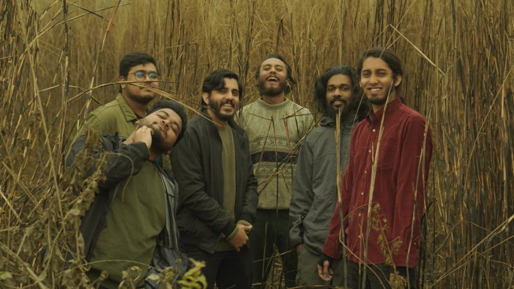
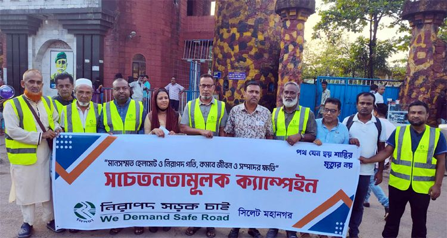

Most of us woke up last Friday to news that felt like a punch to the gut. The vehicle carrying members of the beloved band Odd Signature was involved in a fatal collision in front of Dream Holiday Park in Panchdona, Narsingdi. They were on their way to Sylhet, a journey that should have ended in music and celebration. Instead, it ended in tragedy.
We lost Ahasan Tanvir Pial, a vocalist and guitarist whose talent was just beginning to hit its stride. We lost the driver, Salam, who was simply doing his job. As the remaining band members fight for their lives in critical condition, a familiar wave of shock and silence has swept through the music community. No one could have predicted that such a bright light would be extinguished so prematurely.

A loss that resonates: Pial's untimely departure has sparked a national conversation on road safety.
A Poisoned Routine
While we mourn, we have to look at the ugly, repetitive truth behind this incident: our roads are broken. Every morning, the news feed is a casualty list. We have reached a point where fatal accidents are treated as "common occurrences," accepted with a shrug and a sigh. This normalization is a poison gradually seeping into our national consciousness.
Road accidents have been a persistent shadow over Bangladesh for the last decade, stubbornly remaining a crisis despite massive public movements. We all remember 2018, when two college students were killed by reckless driving, sparking a nationwide outcry for safer roads. It is a damning indictment of our justice system that it took the collective rage of the youth for a single moment of accountability to occur.
The Information Cloud
In 2023, the Bangladesh Jatri Kalyan Samity (BJKS) reported over 7,902 deaths in 6,261 accidents. Curiously, the Bangladesh Road Transport Authority (BRTA) annual report cited only 5,024 deaths for the same period. This discrepancy isn't just a clerical error; it’s a battle of narratives. When the two primary bodies responsible for road data spend more time accusing each other of fabrication than solving the problem, the victims are the ones who pay the price.

The "Cloudy" Data: Significant gaps exist between official and independent road casualty reports.
Why is this information so cloudy? Why are organizations like NISCHA (Nirapad Sarak Chai), who have spent decades fighting for safer streets, left to work in the shadows without proper support from the authorities? The lack of a unified, transparent record is the biggest hurdle to reform. If we can't even agree on how many people are dying, how can we ever hope to stop the deaths?
Demanding Answers
The absence of accountability is the oxygen that keeps this fire burning. In the Odd Signature accident, two lives were lost and countless others were devastated. Who takes the blame? Who is held accountable for the crumbling infrastructure, the lack of department oversight, and the culture of reckless driving? To eradicate this problem, we must ensure those responsible for our safety feel the weight of their inaction.
Let us take the tragic loss of Pial as a painful reminder that these "unnecessary" deaths happen far too often. Our deepest condolences go out to the families of Pial, Salam, and everyone impacted by this tragedy. We hope you find strength. We hope you find justice.
But most of all, we hope that one day, a road in Bangladesh can just be a road again.